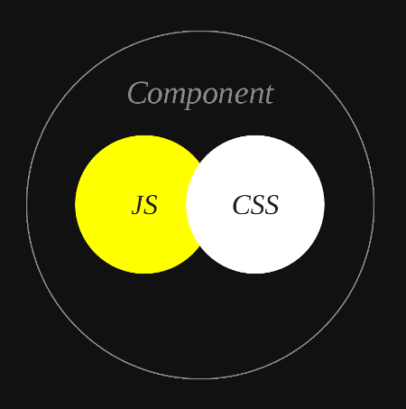

<!DOCTYPE HTML>
<html lang="zh-CN">
<head><meta name="generator" content="Hexo 3.8.0">
    <!--Setting-->
    <meta charset="UTF-8">
    <meta name="viewport" content="width=device-width, user-scalable=no, initial-scale=1.0, maximum-scale=1.0, minimum-scale=1.0">
    <meta http-equiv="X-UA-Compatible" content="IE=Edge,chrome=1">
    <meta http-equiv="Cache-Control" content="no-siteapp">
    <meta http-equiv="Cache-Control" content="no-transform">
    <meta name="renderer" content="webkit|ie-comp|ie-stand">
    <meta name="apple-mobile-web-app-capable" content="王永杰的网络日志">
    <meta name="apple-mobile-web-app-status-bar-style" content="black">
    <meta name="format-detection" content="telephone=no,email=no,adress=no">
    <meta name="browsermode" content="application">
    <meta name="screen-orientation" content="portrait">
    <!-- 自定义视频托管 -->
    <script src="https://player.polyv.net/script/polyvplayer.min.js"></script>
    <link rel="dns-prefetch" href="http://wangyongjie.top">
    <!--SEO-->

    <meta name="keywords" content="JavaScript">


    <meta name="description" content="
以下内容来源于 weekly

本周精读文章：请停止 css-in-js 的行为
1 引言

这篇文章表面是在讲 CSS in JS，实际上是 CSS Modules 支持者与 styled-...">


<meta name="robots" content="all">
<meta name="google" content="all">
<meta name="googlebot" content="all">
<meta name="verify" content="all">

    <!--Title-->


<title>请停止css-in-js的行为 | 王永杰的网络日志</title>


    <link rel="alternate" href="/atom.xml" title="王永杰的网络日志" type="application/atom+xml">


    <link rel="icon" href="/favicon.ico">

    


<link rel="stylesheet" href="/css/bootstrap.min.css?rev=3.3.7">
<link rel="stylesheet" href="/css/font-awesome.min.css?rev=4.5.0">
<link rel="stylesheet" href="/css/style.css?rev=@@hash">


    


    <script>
        var _hmt = _hmt || [];
        (function() {
            var hm = document.createElement("script");
            hm.src = "https://hm.baidu.com/hm.js?f42ffe5fed856accbf91820f137dab46";
            var s = document.getElementsByTagName("script")[0];
            s.parentNode.insertBefore(hm, s);
        })();
    </script>


    

</head>

</html>
<!--[if lte IE 8]>
<style>
    html{ font-size: 1em }
</style>
<![endif]-->
<!--[if lte IE 9]>
<div style="ie">你使用的浏览器版本过低，为了你更好的阅读体验，请更新浏览器的版本或者使用其他现代浏览器，比如Chrome、Firefox、Safari等。</div>
<![endif]-->

<body>
    <header class="main-header" style="background-image:url(http://snippet.shenliyang.com/img/banner.jpg)">
    <div class="main-header-box">
        <a class="header-avatar" href="/" title="wangyongjie">
            
        </a>
        <div class="branding">
        	<!--<h2 class="text-hide">Snippet主题,从未如此简单有趣</h2>-->
            
                <h2> 我是谁 我在哪 我在做什么 </h2>
            
    	</div>
    </div>
</header>
    <nav class="main-navigation">
    <div class="container">
        <div class="row">
            <div class="col-sm-12">
                <div class="navbar-header"><span class="nav-toggle-button collapsed pull-right" data-toggle="collapse" data-target="#main-menu" id="mnav">
                    <span class="sr-only"></span>
                        <i class="fa fa-bars"></i>
                    </span>
                    <a class="navbar-brand" href="http://wangyongjie.top">王永杰的网络日志</a>
                </div>
                <div class="collapse navbar-collapse" id="main-menu">
                    <ul class="menu">
                        
                            <li role="presentation" class="text-center">
                                <a href="/"><i class="fa "></i>首页</a>
                            </li>
                        
                            <li role="presentation" class="text-center">
                                <a href="/categories/前端/"><i class="fa "></i>前端</a>
                            </li>
                        
                            <li role="presentation" class="text-center">
                                <a href="/categories/后端/"><i class="fa "></i>后端</a>
                            </li>
                        
                            <li role="presentation" class="text-center">
                                <a href="/categories/工具/"><i class="fa "></i>工具</a>
                            </li>
                        
                            <li role="presentation" class="text-center">
                                <a href="/webnav/"><i class="fa "></i>导航</a>
                            </li>
                        
                            <li role="presentation" class="text-center">
                                <a href="/archives/"><i class="fa "></i>时间轴</a>
                            </li>
                        
                            <li role="presentation" class="text-center">
                                <a href="/message/"><i class="fa "></i>留言板</a>
                            </li>
                        
                            <li role="presentation" class="text-center">
                                <a href="/categories/生活/"><i class="fa "></i>生活</a>
                            </li>
                        
                            <li role="presentation" class="text-center">
                                <a href="/about/"><i class="fa "></i>关于</a>
                            </li>
                        
                    </ul>
                </div>
            </div>
        </div>
    </div>
</nav>
    <section class="content-wrap">
        <div class="container">
            <div class="row">
                <main class="col-md-8 main-content m-post">
                    <p id="process"></p>
<article class="post">
    <div class="post-head">
        <h1 id="请停止css-in-js的行为">
            
	            请停止css-in-js的行为
            
        </h1>
        <div class="post-meta">
    
        <span class="categories-meta fa-wrap">
            <i class="fa fa-folder-open-o"></i>
            <a class="category-link" href="/categories/前端/">前端</a>
        </span>
    

    
        <span class="fa-wrap">
            <i class="fa fa-tags"></i>
            <span class="tags-meta">
                
                    <a class="tag-link" href="/tags/JavaScript/">JavaScript</a>
                
            </span>
        </span>
    

    
        
        <span class="fa-wrap">
            <i class="fa fa-clock-o"></i>
            <span class="date-meta">2019/01/16</span>
        </span>
        
    
</div>
            
            
    </div>
    
    <div class="post-body post-content">
        <blockquote>
<p>以下内容来源于 <a href="https://github.com/dt-fe/weekly" target="_blank" rel="noopener">weekly</a></p>
</blockquote>
<p>本周精读文章：<a href="https://hackernoon.com/stop-using-css-in-javascript-for-web-development-fa32fb873dcc" target="_blank" rel="noopener">请停止 css-in-js 的行为</a></p>
<h2 id="1-引言"><a href="#1-引言" class="headerlink" title="1 引言"></a>1 引言</h2><p></p>
<blockquote>
<p>这篇文章表面是在讲 CSS in JS，实际上是 CSS Modules 支持者与 styled-components 拥趸之间的唇枪舌剑、你来我往。从 2014 年 Vjeux 的演讲开始，css-in-js 的轮子层出不穷。终于过了三年，鸡血时期已经慢慢过去，大家开始冷静思考了。</p>
</blockquote>
<h2 id="2-内容概要"><a href="#2-内容概要" class="headerlink" title="2 内容概要"></a>2 内容概要</h2><h3 id="styled-components"><a href="#styled-components" class="headerlink" title="styled-components"></a>styled-components</h3><p>styled-components 利用 ES6 的 tagged template 语法创建 react 纯样式组件。消除了人肉在 dom 和 css 之间做映射和切换的痛苦，并且有大部分编辑器插件的大力支持（语法高亮等）。此外，styled-components 在 ReactNaive 中尤其适用。</p>
<p>styled-components 简单易学，引用官方源码：</p>
<figure class="highlight jsx"><table><tr><td class="gutter"><pre><span class="line">1</span><br><span class="line">2</span><br><span class="line">3</span><br><span class="line">4</span><br><span class="line">5</span><br><span class="line">6</span><br><span class="line">7</span><br><span class="line">8</span><br><span class="line">9</span><br><span class="line">10</span><br><span class="line">11</span><br><span class="line">12</span><br><span class="line">13</span><br></pre></td><td class="code"><pre><span class="line"><span class="keyword">import</span> React <span class="keyword">from</span> <span class="string">'react'</span>;</span><br><span class="line"></span><br><span class="line"><span class="keyword">import</span> styled <span class="keyword">from</span> <span class="string">'styled-components'</span>;</span><br><span class="line"></span><br><span class="line"><span class="keyword">const</span> Title = styled.h1<span class="string">`</span></span><br><span class="line"><span class="string">  font-size: 1.5em;</span></span><br><span class="line"><span class="string">  text-align: center;</span></span><br><span class="line"><span class="string">  color: palevioletred;</span></span><br><span class="line"><span class="string">`</span>;</span><br><span class="line"></span><br><span class="line">&lt;Title&gt;</span><br><span class="line">  Hello World, <span class="keyword">this</span> is my first styled component!</span><br><span class="line">&lt;<span class="regexp">/Title&gt;</span></span><br></pre></td></tr></table></figure>
<h3 id="css-modules"><a href="#css-modules" class="headerlink" title="css-modules"></a>css-modules</h3><p>顾名思义，css-modules 将 css 代码模块化，可以很方面的避免本模块样式被污染。并且可以很方便的复用 css 代码。</p>
<figure class="highlight css"><table><tr><td class="gutter"><pre><span class="line">1</span><br><span class="line">2</span><br><span class="line">3</span><br><span class="line">4</span><br><span class="line">5</span><br><span class="line">6</span><br><span class="line">7</span><br><span class="line">8</span><br><span class="line">9</span><br><span class="line">10</span><br><span class="line">11</span><br><span class="line">12</span><br><span class="line">13</span><br><span class="line">14</span><br><span class="line">15</span><br></pre></td><td class="code"><pre><span class="line">// 全局变量</span><br><span class="line"><span class="selector-pseudo">:global(.className)</span> &#123;</span><br><span class="line">  <span class="attribute">background-color</span>: blue;</span><br><span class="line">&#125;</span><br><span class="line"></span><br><span class="line">// 本地变量，其它模块无法污染</span><br><span class="line"><span class="selector-class">.className</span> &#123;</span><br><span class="line">  <span class="attribute">background-color</span>: blue;</span><br><span class="line">&#125;</span><br><span class="line"></span><br><span class="line"><span class="selector-class">.title</span> &#123;</span><br><span class="line">  // 复用 className 类的样式</span><br><span class="line">  <span class="selector-tag">composes</span>: <span class="selector-tag">className</span>;</span><br><span class="line">  <span class="selector-tag">color</span>: <span class="selector-tag">red</span>;</span><br><span class="line">&#125;</span><br></pre></td></tr></table></figure>
<h3 id="react-css-modules"><a href="#react-css-modules" class="headerlink" title="react-css-modules"></a>react-css-modules</h3><p>值得一提的是，文章的作者也是 <a href="https://github.com/gajus/react-css-modules" target="_blank" rel="noopener">react-css-modules</a> 的作者。</p>
<p>react-css-modules 代码示例：</p>
<figure class="highlight jsx"><table><tr><td class="gutter"><pre><span class="line">1</span><br><span class="line">2</span><br><span class="line">3</span><br><span class="line">4</span><br><span class="line">5</span><br><span class="line">6</span><br><span class="line">7</span><br><span class="line">8</span><br><span class="line">9</span><br><span class="line">10</span><br><span class="line">11</span><br><span class="line">12</span><br><span class="line">13</span><br><span class="line">14</span><br><span class="line">15</span><br><span class="line">16</span><br></pre></td><td class="code"><pre><span class="line"><span class="keyword">import</span> React <span class="keyword">from</span> <span class="string">'react'</span>;</span><br><span class="line"><span class="keyword">import</span> CSSModules <span class="keyword">from</span> <span class="string">'react-css-modules'</span>;</span><br><span class="line"><span class="keyword">import</span> styles <span class="keyword">from</span> <span class="string">'./table.css'</span>;</span><br><span class="line"></span><br><span class="line"><span class="class"><span class="keyword">class</span> <span class="title">Table</span> <span class="keyword">extends</span> <span class="title">React</span>.<span class="title">Component</span> </span>&#123;</span><br><span class="line">    render () &#123;</span><br><span class="line">        <span class="keyword">return</span> <span class="xml"><span class="tag">&lt;<span class="name">div</span> <span class="attr">styleName</span>=<span class="string">'table'</span>&gt;</span></span></span><br><span class="line">            &lt;div styleName='row'&gt;</span><br><span class="line">                &lt;div styleName='cell'&gt;A0&lt;/div&gt;</span><br><span class="line">                &lt;div styleName='cell'&gt;B0&lt;/div&gt;</span><br><span class="line"><span class="xml">            <span class="tag">&lt;/<span class="name">div</span>&gt;</span></span></span><br><span class="line"><span class="xml">        <span class="tag">&lt;/<span class="name">div</span>&gt;</span></span>;</span><br><span class="line">    &#125;</span><br><span class="line">&#125;</span><br><span class="line"></span><br><span class="line"><span class="keyword">export</span> <span class="keyword">default</span> CSSModules(Table, styles);</span><br></pre></td></tr></table></figure>
<p>react-css-modules 引入了 styleName，将本地变量和全局变量很清晰的分开。并且也避免了每次对 styles 对象的引用，本地 className 名也不用总是写成 camelCase。</p>
<p>另外，使用 react-css-modules，可以方便的覆盖本地变量的样式：</p>
<figure class="highlight plain"><table><tr><td class="gutter"><pre><span class="line">1</span><br><span class="line">2</span><br><span class="line">3</span><br></pre></td><td class="code"><pre><span class="line">import customStyles from &apos;./table-custom-styles.css&apos;;</span><br><span class="line"></span><br><span class="line">&lt;Table styles=&#123;customStyles&#125; /&gt;;</span><br></pre></td></tr></table></figure>
<h3 id="文章内容"><a href="#文章内容" class="headerlink" title="文章内容"></a>文章内容</h3><h2 id="3-精读"><a href="#3-精读" class="headerlink" title="3. 精读"></a>3. 精读</h2><p>参与本次精读的同学有 <a href="https://www.zhihu.com/people/huang-zi-yi-83/answers" target="_blank" rel="noopener">黄子毅</a>，<a href="https://www.zhihu.com/people/yangsen/answers" target="_blank" rel="noopener">杨森</a> 和 <a href="https://www.zhihu.com/people/camsong/answers" target="_blank" rel="noopener">camsong</a>。该部分由他们的观点总结而出。</p>
<p>CSS 本身有不少缺陷，如书写繁琐（不支持嵌套）、样式易冲突（没有作用域概念）、缺少变量（不便于一键换主题）等不一而足。为了解决这些问题，社区里的解决方案也是出了一茬又一茬，从最早的 CSS prepocessor（SASS、LESS、Stylus）到后来的后起之秀 PostCSS，再到 CSS Modules、Styled-Components 等。更有甚者，有人维护了一份完整的 <a href="https://github.com/MicheleBertoli/css-in-js" target="_blank" rel="noopener">CSS in JS 技术方案的对比</a>。截至目前，已有 49 种之多。</p>
<h3 id="Styled-components-优缺点"><a href="#Styled-components-优缺点" class="headerlink" title="Styled-components 优缺点"></a>Styled-components 优缺点</h3><h4 id="优点"><a href="#优点" class="headerlink" title="优点"></a>优点</h4><h5 id="使用成本低"><a href="#使用成本低" class="headerlink" title="使用成本低"></a>使用成本低</h5><p>如果是要做一个组件库，让使用方拿着 npm 就能直接用，样式全部自己搞定，不需要依赖其它组件，如 react-dnd 这种，比较适合。</p>
<h5 id="更适合跨平台"><a href="#更适合跨平台" class="headerlink" title="更适合跨平台"></a>更适合跨平台</h5><p>适用于 react-native 这类本身就没有 css 的运行环境。</p>
<h4 id="缺陷"><a href="#缺陷" class="headerlink" title="缺陷"></a>缺陷</h4><h5 id="缺乏扩展性"><a href="#缺乏扩展性" class="headerlink" title="缺乏扩展性"></a>缺乏扩展性</h5><p>样式就像小孩的脸，说变就变。比如是最简单的 button，可能在用的时候由于场景不同，就需要设置不同的 font-size，height，width，border 等等，如果全部使用 css-in-js 那将需要把每个样式都变成 props，如果这个组件的 dom 还有多层级呢？你是无法把所有样式都添加到 props 中。同时也不能全部设置成变量，那就丧失了单独定制某个组件的能力。css-in-js 生成的 className 通常是不稳定的随机串，这就给外部想灵活覆盖样式增加了困难。</p>
<h3 id="css-modules-优缺点"><a href="#css-modules-优缺点" class="headerlink" title="css-modules 优缺点"></a>css-modules 优缺点</h3><h4 id="优点-1"><a href="#优点-1" class="headerlink" title="优点"></a>优点</h4><p>1、CSS Modules 可以有效避免全局污染和样式冲突，能最大化地结合现有 CSS 生态和 JS 模块化能力</p>
<p>2、与 SCSS 对比，可以避免 className 的层级嵌套，只使用一个 className 就能把所有样式定义好。</p>
<h4 id="缺点："><a href="#缺点：" class="headerlink" title="缺点："></a>缺点：</h4><p>1、与组件库难以配合</p>
<p>2、会带来一些使用成本，本地样式覆盖困难，写到最后可能一直在用 :global。</p>
<h3 id="关于-scss-less"><a href="#关于-scss-less" class="headerlink" title="关于 scss/less"></a>关于 scss/less</h3><p>无论是 sass 还是 less 都有一套自己的语法，postcss 更支持了自定义语法，自创的语法最大特点就是雷同，格式又不一致，增加了无意义的学习成本。我们更希望去学习和使用万变不离其宗的东西，而不愿意使用各种定制的“语法糖”来“提高效率”。</p>
<p>就 css 变量与 js 通信而言，虽然草案已经考虑到了这一点，通过表达式与 attribute 通信，使用 js 与 attribute 同步。不难想象，这种情况维护的变量值最终是存储在 js 中更加妥当，然而 scss 给大家带来的 css first 思想根深蒂固，导致许多基础库的变量完全存储在 _variable.scss 文件中，现在无论是想适应 css 的新特性，还使用 css-in-js 都有巨大的成本，导致项目几乎无法迁移。反过来，如果变量存储在 js 中，就像草案中说的一样轻巧，你只要换一种方式实现 css 就行了。</p>
<h2 id="总结"><a href="#总结" class="headerlink" title="总结"></a>总结</h2><p>在众多解决方案中，没有绝对的优劣。还是要结合自己的场景来决定。</p>
<p>我们团队在使用过 scss 和 css modules 后，仍然又重新选择了使用 scss。css modules 虽然有效解决了样式冲突的问题，但是带来的使用成本也很大。尤其是在写动画（keyframe）的时候，语法尤其奇怪，总是出错，难以调试。并且我们团队在开发时，因为大家书写规范，也从来没有碰到过样式冲突的问题。</p>
<p>Styled-components 笔者未曾使用过，但它消除人肉在 dom 和 css 之间做映射的优点，非常吸引我。而对于样式扩展的问题，其实也有<a href="https://github.com/styled-components/styled-components#user-content-overriding-component-styles" target="_blank" rel="noopener">比较优雅的方式</a>。</p>
<figure class="highlight jsx"><table><tr><td class="gutter"><pre><span class="line">1</span><br><span class="line">2</span><br><span class="line">3</span><br></pre></td><td class="code"><pre><span class="line"><span class="keyword">const</span> CustomedButton = styled(Button)<span class="string">`</span></span><br><span class="line"><span class="string">  color: customedColor;</span></span><br><span class="line"><span class="string">`</span>;</span><br></pre></td></tr></table></figure>
<p><strong>如果你想参与讨论，请<a href="https://github.com/dt-fe/weekly" target="_blank" rel="noopener">点击这里</a>，每周都有新的主题，每周五发布。</strong></p>
<p><br><strong>本文作者</strong>：王永杰<br><strong>本文地址</strong>： <a href="http://wangyongjie.top/blog/49453/">http://wangyongjie.top/blog/49453/</a> <br><strong>版权声明</strong>：本博客所有文章除特别声明外，均采用 <a href="http://creativecommons.org/licenses/by-nc-sa/3.0/cn/" target="_blank" rel="noopener">CC BY-NC-SA 3.0 CN</a> 许可协议。转载请注明出处！</p>

    </div>
    
        <div class="reward" ontouchstart>
    <div class="reward-wrap">赏
        <div class="reward-box">
            
                <span class="reward-type">
                    <b>支付宝打赏</b>
                </span>
            
            
                <span class="reward-type">
                    <b>微信打赏</b>
                </span>
            
        </div>
    </div>
    <p class="reward-tip">一分也是爱</p>
</div>


    
    <div class="post-footer">
        <div>
            
                转载声明：商业转载请联系作者获得授权,非商业转载请注明出处 <a href="http://wangyongjie.top" target="_blank"> http://wangyongjie.top</a>
            
        </div>
        <div>
            
        </div>
    </div>
</article>

<div class="article-nav prev-next-wrap clearfix">
    
        <a href="/blog/35925/" class="pre-post btn btn-default" title="Chrome浏览器模拟微信调试网站">
            <i class="fa fa-angle-left fa-fw"></i><span class="hidden-lg">上一篇</span>
            <span class="hidden-xs">Chrome浏览器模拟微信调试网站</span>
        </a>
    
    
        <a href="/blog/47263/" class="next-post btn btn-default" title="驾照已拿到❤️">
            <span class="hidden-lg">下一篇</span>
            <span class="hidden-xs">驾照已拿到❤️</span><i class="fa fa-angle-right fa-fw"></i>
        </a>
    
</div>


    <div id="comments">
        
	
<div id="lv-container" data-id="city" data-uid="MTAyMC8zNDc5OS8xMTMzNg==">
  <script type="text/javascript">
     (function(d, s) {
         var j, e = d.getElementsByTagName(s)[0];
         if (typeof LivereTower === 'function') { return; }
         j = d.createElement(s);
         j.src = 'https://cdn-city.livere.com/js/embed.dist.js';
         j.async = true;
         e.parentNode.insertBefore(j, e);
     })(document, 'script');
  </script>
</div>


    </div>


                </main>
                
                    <aside id="article-toc" role="navigation" class="col-md-4">
    <div class="widget">
        <h3 class="title">文章目录</h3>
        
            <ol class="toc"><li class="toc-item toc-level-2"><a class="toc-link" href="#1-引言"><span class="toc-text">1 引言</span></a></li><li class="toc-item toc-level-2"><a class="toc-link" href="#2-内容概要"><span class="toc-text">2 内容概要</span></a><ol class="toc-child"><li class="toc-item toc-level-3"><a class="toc-link" href="#styled-components"><span class="toc-text">styled-components</span></a></li><li class="toc-item toc-level-3"><a class="toc-link" href="#css-modules"><span class="toc-text">css-modules</span></a></li><li class="toc-item toc-level-3"><a class="toc-link" href="#react-css-modules"><span class="toc-text">react-css-modules</span></a></li><li class="toc-item toc-level-3"><a class="toc-link" href="#文章内容"><span class="toc-text">文章内容</span></a></li></ol></li><li class="toc-item toc-level-2"><a class="toc-link" href="#3-精读"><span class="toc-text">3. 精读</span></a><ol class="toc-child"><li class="toc-item toc-level-3"><a class="toc-link" href="#Styled-components-优缺点"><span class="toc-text">Styled-components 优缺点</span></a><ol class="toc-child"><li class="toc-item toc-level-4"><a class="toc-link" href="#优点"><span class="toc-text">优点</span></a><ol class="toc-child"><li class="toc-item toc-level-5"><a class="toc-link" href="#使用成本低"><span class="toc-text">使用成本低</span></a></li><li class="toc-item toc-level-5"><a class="toc-link" href="#更适合跨平台"><span class="toc-text">更适合跨平台</span></a></li></ol></li><li class="toc-item toc-level-4"><a class="toc-link" href="#缺陷"><span class="toc-text">缺陷</span></a><ol class="toc-child"><li class="toc-item toc-level-5"><a class="toc-link" href="#缺乏扩展性"><span class="toc-text">缺乏扩展性</span></a></li></ol></li></ol></li><li class="toc-item toc-level-3"><a class="toc-link" href="#css-modules-优缺点"><span class="toc-text">css-modules 优缺点</span></a><ol class="toc-child"><li class="toc-item toc-level-4"><a class="toc-link" href="#优点-1"><span class="toc-text">优点</span></a></li><li class="toc-item toc-level-4"><a class="toc-link" href="#缺点："><span class="toc-text">缺点：</span></a></li></ol></li><li class="toc-item toc-level-3"><a class="toc-link" href="#关于-scss-less"><span class="toc-text">关于 scss/less</span></a></li></ol></li><li class="toc-item toc-level-2"><a class="toc-link" href="#总结"><span class="toc-text">总结</span></a></li></ol>
        
    </div>
</aside>

                
            </div>
        </div>
    </section>
    <footer class="main-footer">
    <div class="container">
        <div class="row">
        </div>
    </div>
</footer>

<a id="back-to-top" class="icon-btn hide">
	<i class="fa fa-chevron-up"></i>
</a>


    <div class="copyright">
    <div class="container">
        <div class="row">
            <div class="col-sm-12">
                <div class="busuanzi">
    
</div>

            </div>
            <div class="col-sm-12">
                <span>Copyright &copy; 2019
                </span> |
                <span>
                    Powered by <a href="//hexo.io" class="copyright-links" target="_blank" rel="nofollow">Hexo</a>
                </span> |
                <span>
                    Theme by <a href="//github.com/shenliyang/hexo-theme-snippet.git" class="copyright-links" target="_blank" rel="nofollow">Snippet</a>
                </span>
            </div>
        </div>
    </div>
</div>


<script src="/js/app.js?rev=@@hash"></script>

</body>
</html>